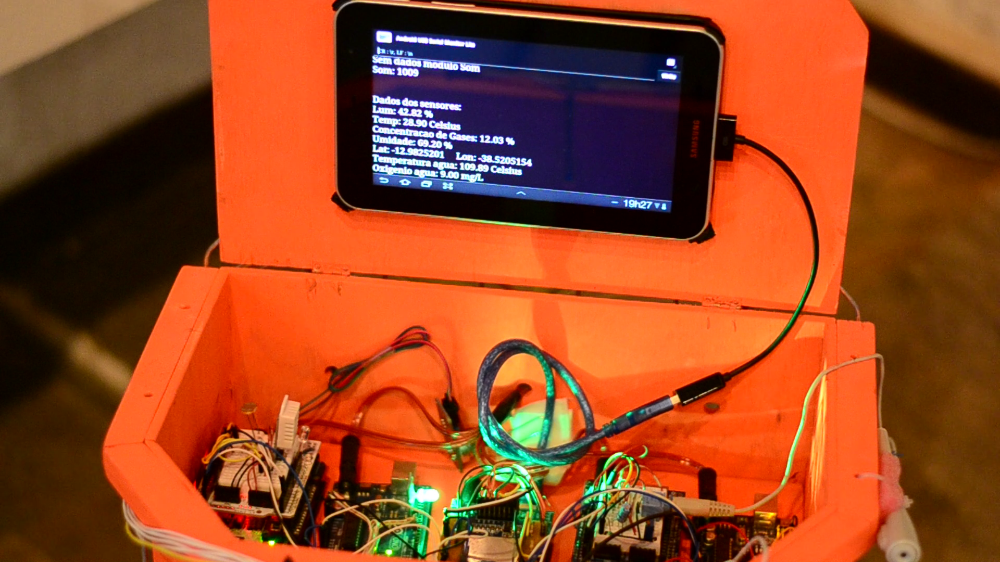
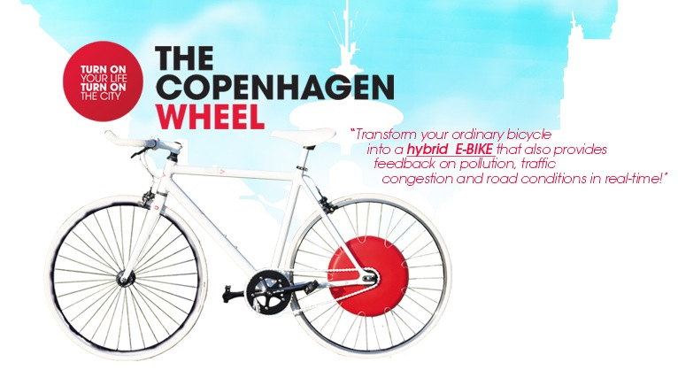
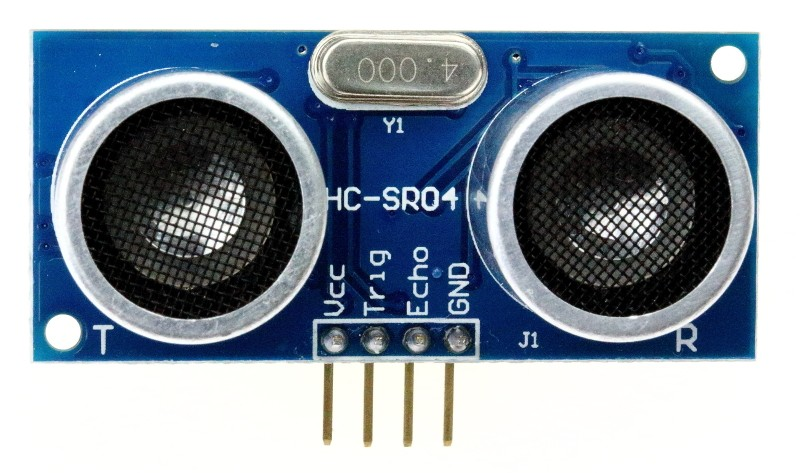

Bduíno
Um dispositivo para a captura de dados do contexto urbano para o uso da bicicleta.
Graduando: Antonio Fernando Santos Ladeia
Orientador: Pablo Vieira Florentino
Agenda
- Motivação
- Problema
- Objetivo
- Solução proposta
- Conceitos básicos
- Trabalhos relacionados
- Especificação e validação
- Conclusão e trabalhos futuros
Motivação
- Falta de condições adequadas ao uso da bicicleta
- Desrespeito à algumas leis de trânsito brasileira como a que estabelece 1,5m como distância mínima de ultrapassagem de uma bicicleta
- Falta de infraestrutura propícia aos ciclistas
- Falta de Políticas públicas para o uso da bicicleta
- Desenvolvivento aberto, replicável e adaptável
 |
||
Problema
É possível mensurar se os fatores ambientais e urbanos juntamente com as políticas públicas para a legitimação do uso da bicicleta como modal de transporte são realmente atrativos e suficientes?
Objetivo
Captura de informações reais e detalhadas relativas ao ambiente das ruas a partir do uso de bicicletas.
Solução Proposta
Desenvolvimento de um dispositivo usando prioritariamente tecnologias livres que seja replicável e adaptável para capturar e mensurar os dados urbanos e ambientais de forma geolocalizada.
Bduíno
Bduíno é uma corruptela dos nomes Bicicleta e Arduíno, além disso também lembra o nome de tribos de nômades do deserto que também relacionam-se com mobilidade.
Nome sugerido por Leo Ramos na lista do Raul Hacker ClubConceitos Básicos
- Aplicações embarcadas
- Sensores como meio de coleta de aspectos do contexto urbano
- Hardware aberto
Trabalhos Relacionados
Sensorium
The Copenhagen Wheel
Especificação e Validação
Aplicação conjunta, Arduíno e Raspberry Pi
- Captura de dados
- Comunicação serial
- Armazenamento de dados
 |
 | |
 |

Modelo de dados gerado no arduíno
{
"light":"light_value",
"temperature":"temperature_value",
"humidity":"humidity_value",
"distance":"distance_value",
"longitute":"longitute_value",
"latitude":"latitude_value",
"sound":"sound_value",
"shake":"shake_value"
}
Exemplo de coleta de dados
Gráfico de quantidade de veículos por distância
Gráfico de temperatura

Comparativo
| Sensorium | T. C. W. | Bduíno | |
|---|---|---|---|
| Modal | A pé | Bicicleta | Bicicleta |
| Armazenamento | Tablet | Celular | Bduíno |
| Alimentação | Indefinido | Baterias | Bateria c/ carregador solar |
| Instalação | Não existe | Trocar rodas | Amarração |
| Distribuição | Open source? | Venda | Open source |
Conclusão e Trabalhos Futuros
Conclusão
O dispositivo mostrou se capaz de captar dados georeferenciados que mostram aspectos urbanos, como por exemplo a distância entre o veículos motorizados e a bicicleta. Outros aspectos como temperatura e umidade do ar também são coletados e podem influenciar diretamente a relação do uso das pistas pelos ciclistas.
Através de um estudo desses dados, estruturados e georeferenciados, é possível indicar quais áreas mais ou menos propícias para o uso da bicicleta.
Trabalhos futuros
- Envio de dados no momento da coleta para um servidor
- Adicionar o cálculo de velocidade de veículos motorizados
- Utilizar também um dînamo para coletar energia mesmo pedalando em ambientes pouco iluminados
- Criação de uma plataforma para múltiplas visualizações dos dados
Referências
- K. Brunet, T. Oliveria, Arte, DIY e Comunicação Ambiental: Estudo de caso do projeto Sensorium, do mar para o rio, 2º Encontro Interdisciplinar de Comunicação Ambiental (EICA), 2013.
- C. Outram, C. Ratti, A. Biderman, The Copenhagen Wheel: An innovative electric bicycle system that harnesses the power of real-time information and crowd sourcing, COP15 United Nations Climate Change Conference in Copenhagen, 2010.
- J. Boxall, Arduino workshop A hands-on introduction with 65 projects, No Starch Press, 2013.
- S. Monk, Programando o Raspberry Pi, primeiros passos com Python, novatec, 2013.